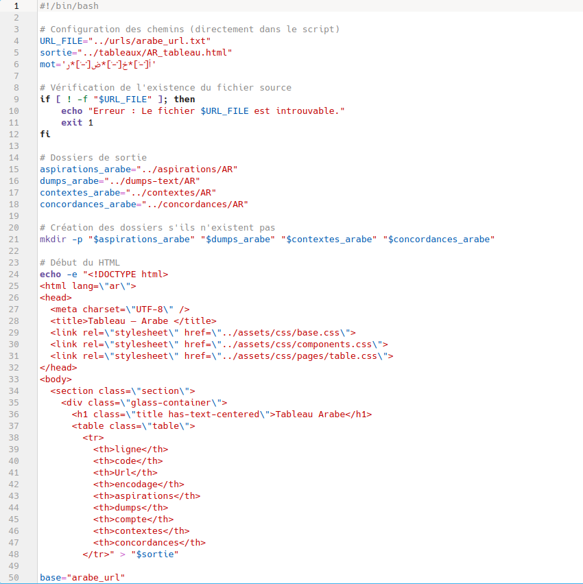
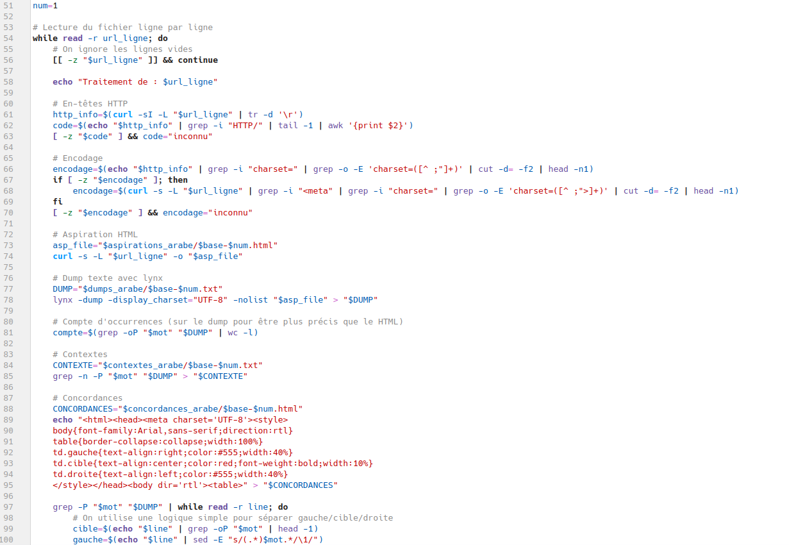
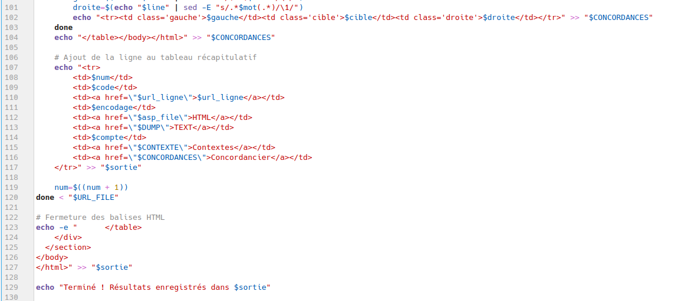
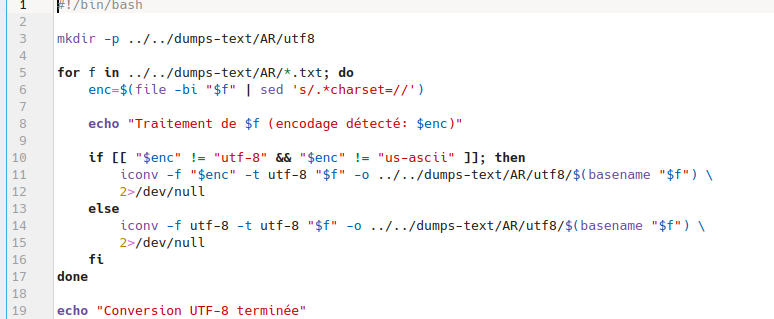
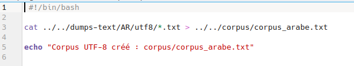
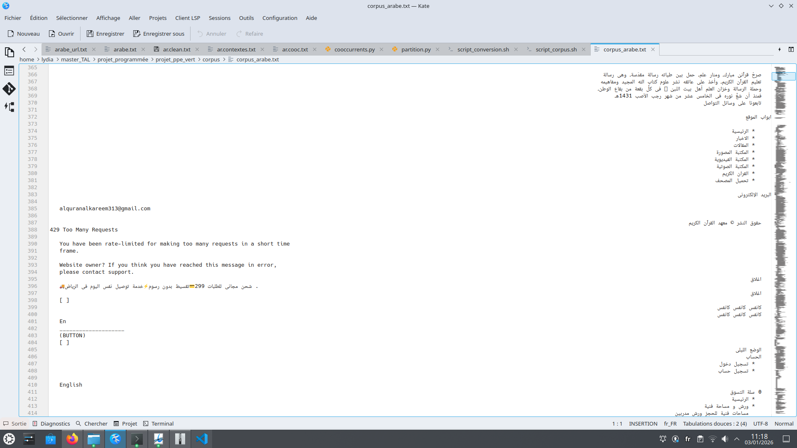
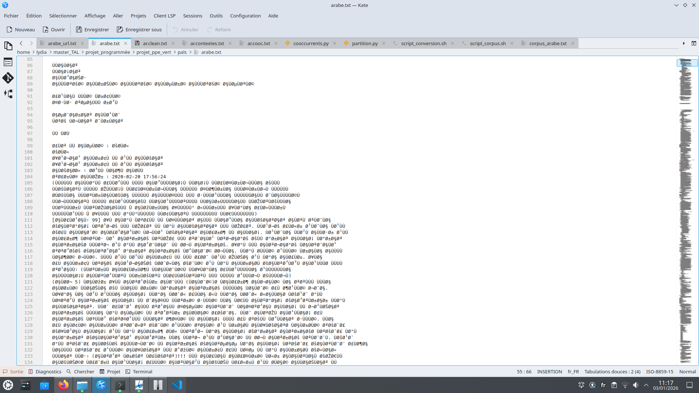
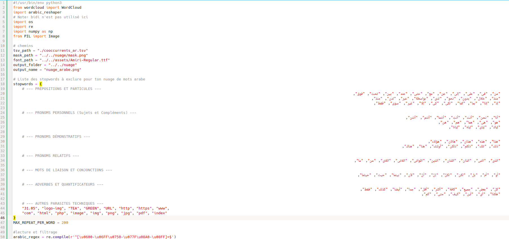
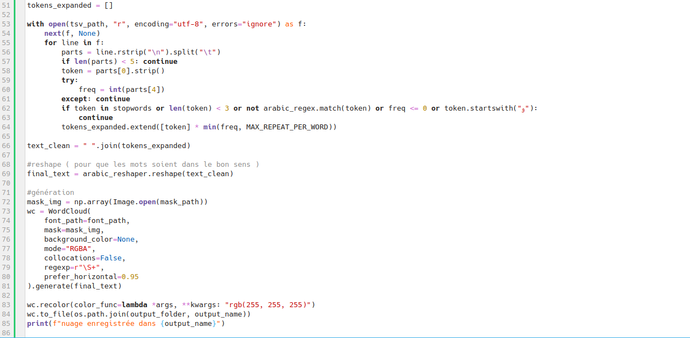

Ce premier script a pour mission de créer une base de données textuelle structurée à partir d'un ensemble d'URLs préalablement sélectionnées.
Pour ce faire, il analyse chaque adresse de la liste afin d'en extraire les informations essentielles, à savoir le code HTTP et le type d'encodage.
Il procède ensuite au téléchargement du code HTML de chaque page. Grâce à l'outil lynx, il transforme ce code complexe en un texte brut épuré, appelé dump, qui est totalement débarrassé des éléments parasites comme les balises, les scripts ou les menus de navigation.
Une fois ce texte propre obtenu, le but principal est de dénombrer les apparitions de notre mot cible au sein d'une variable de compte. Pour optimiser cette recherche, le script utilise une variable mot définie par une expression régulière (regex).
Cette dernière est particulièrement efficace car elle inclut le terme écrit avec ou sans ses diacritiques arabes, permettant ainsi d'élargir la détection même aux mots vocalisés. À partir de ce dump, le programme génère des fichiers de contexte où chaque phrase contenant le mot est isolée sur une ligne distincte.
Enfin, le script produit un concordancier HTML conçu spécifiquement pour la langue arabe. En utilisant l'attribut dir="rtl", il garantit un affichage correct du sens de lecture de droite à gauche. Ce concordancier se présente sous la forme d'un tableau à trois colonnes où sont soigneusement alignés le contexte gauche, le contexte droit et le mot cible au centre.
Toutes ces données finales sont regroupées dans un tableau HTML récapitulatif, offrant une ligne pour chaque URL et une colonne pour chaque type d'information récoltée.




Afin de garantir la lisibilité du texte arabe, un script de normalisation est indispensable. Il utilise la commande file -bi pour détecter l'encodage d'origine de chaque fichier (souvent de l'ISO-8859) et applique l'outil iconv pour les convertir uniformément en UTF-8. Cette étape technique est celle qui corrige les erreurs d'affichage majeures.
Comme on peut le constater sur les captures d'écran fournies, le fichier dump sans conversion affiche des caractères corrompus et illisibles, tandis que le second fichier, après l'exécution du script de conversion, révèle un contenu arabe parfaitement clair et structuré.
Enfin, un script de concaténation fusionne l'ensemble de ces données propres avec la commande cat pour créer le fichier corpus_arabe.txt, servant de base finale à nos analyses.


Ce script Python a pour fonction de générer un nuage de mots. Il commence par : le script importe les bibliothèques nécessaires pour manipuler les images (PIL, numpy), traiter la langue arabe (arabic_reshaper), gérer les fichiers (os) et effectuer des recherches complexes (re). Il les configure, ensuite il importe le fichier de données tsv contenant les fréquences, un mask d'image pour définir la forme du nuage, et une police de caractères spécifique, Amiri-Regular.ttf. Cette police est essentielle pour le rendu correct des glyphes arabes.
Il procède ensuite au filtrage du fichier avec une liste de stopwords qui est définie pour écarter les mots outils, tels que les prépositions et les pronoms... De même, par la suite du programme, il enlève aussi le "wa" de coordination ; sans cette étape, le nuage serait dominé par cette lettre, masquant ainsi les véritables concepts clés.
En complément de ce filtrage, le script utilise une expression régulière (regex) spécifique pour s'assurer que seuls les mots composés de caractères appartenant à l'alphabet arabe sont conservés. Pour éviter qu'un terme trés fréquent n'écrase visuellement tous les autres, la variable MAX_REPEAT_PER_WORD limite la répétition d'un même mot à 200 occurrences. Ces deux contraintes garantissent que le nuage reste homogène et focalisé sur les mots pertinent.
Une fois les données filtrées, le script regroupe tous les mots conservés dans une seule chaîne de caractères, ensuite la bibliothèque arabic_reshaper transforme le texte pour que chaque lettre adopte sa forme contextuelle exacte (initiale, médiane ou finale). Cette étape est importante pour que les mots arabes ne s'affichent pas en lettres détachées et soient lisibles dans le rendu final.
Ensuite, le script passe à la génération graphique du nuage. Il utilise NumPy pour définir les zones où les mots peuvent apparaître comme dans le mask. Le nuage est ensuite configuré avec la police Amiri, un mode RGBA pour la transparence et un réglage prefer_horizontal à 0.95.
Enfin, le script applique une couleur blanche uniforme à tous les mots grâce à une fonction lambda, assurant ainsi une esthétique épurée. La bibliothèque os permet l'exportation finale du nuage au format PNG. Le processus se termine par l'affichage d'un message de succès dans la console, confirmant la création du nuage de mots.